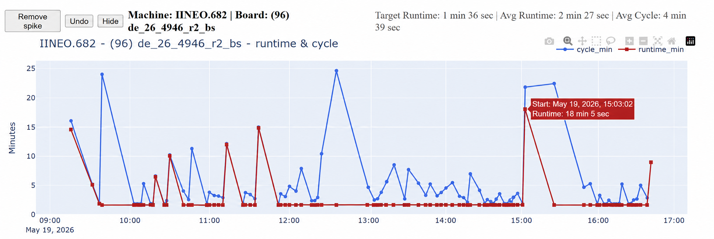

Real-Time Visualisation Platform
Proline Graphs
Real-time SMT production visualisation for monitoring runtime and cycle-time performance throughout the day. Use it live on the shopfloor for monitoring daily production and review meetings.
Real-Time Visualisation Platform
Real-time SMT production visualisation for monitoring runtime and cycle-time performance throughout the day. Use it live on the shopfloor for monitoring daily production and review meetings.
Live Software Examples
Each graph shows runtime and cycle-time per board with interactive datapoints for timestamp and value details.

Core Features
We automatically scan production logs, process runtime data, and keep graphs updated throughout the shift.
Interactive graphs plot full-day performance and immediately highlight deviation from expected output.
Board changeovers are detected automatically so transitions between runs are visible without manual marking.
Retrieve any previous day and compare production patterns, bottlenecks, and runtime consistency over time.
Engineers can remove noise and zoom into precise windows for more accurate analysis during morning reviews.
Built For High-Volume Teams
The platform keeps meetings focused on action by showing what changed, where instability started, and how long it lasted.
Open current run data without waiting for manual report preparation.
Catch sudden cycle-time spikes while production is still running.
Compare behavior between lines and expose repeat instability patterns.
Review prior days quickly for recurring issues before escalating action.
Problem Detection
Proline Graphs helps us catch patterns that are hard to spot in raw machine logs.
Detect gradual increase in cycle-time before output drops significantly.
Expose frequent short interruptions that reduce throughput over the shift.
Measure transition performance between board types and target process loss.
Pinpoint the exact period where unstable behavior begins and repeats.
Free Evaluation
Run Proline Graphs with your own logs and evaluate practical impact in daily production meetings.